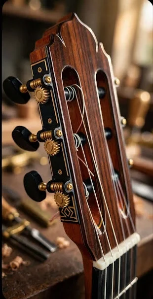
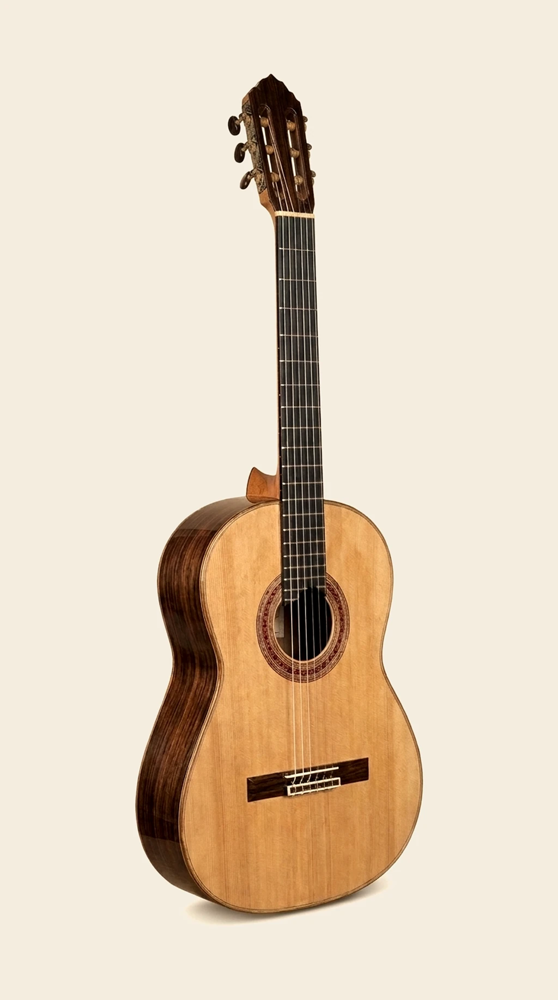
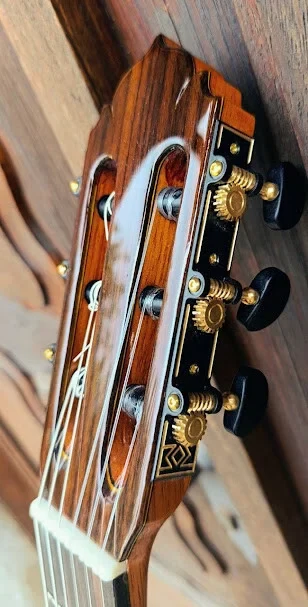
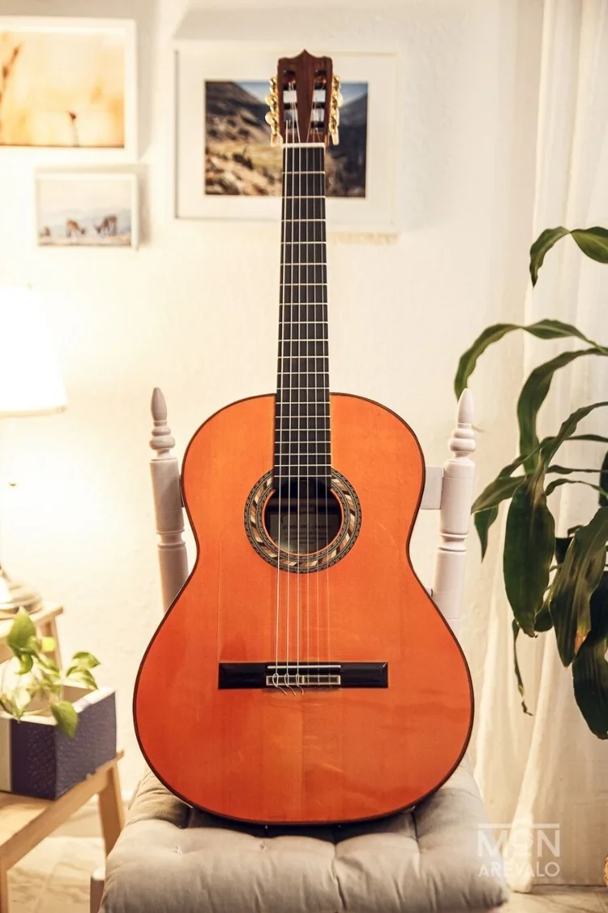

Clásica

Clásica de Concierto
Doble tapa y doble aro. Proyección, equilibrio y una riqueza armónica excepcional.
1.700 €IVA no incluido
Detalles
Luthier artesanal · Toledo, España
Construimos guitarras flamencas y clásicas a mano, una a una. Madera seleccionada, método tradicional español y un sonido que solo pertenece a quien la toca.

Detalle de la marca Gómez del Carmen
Bienvenido a nuestro taller
Detrás de este proyecto está Justo M. Arévalo Gómez, donde se combinan la pasión por la guitarra flamenca y la experiencia como ebanista para dar lugar a instrumentos de belleza singular.
Nuestro compromiso es ofrecer instrumentos de alta calidad, con un sonido único y un diseño cuidadosamente elaborado. Cada guitarra nace de la selección de la madera y termina en los últimos detalles de lacado, pasando por todas las fases del oficio sin atajos.
Cómo construimos cada guitarra“Cada guitarra es única, porque también lo es la mano que la va a tocar.”Justo M. Arévalo Gómez — Luthier
Sobre mí
Justo M. Arévalo Gómez está detrás de este proyecto, donde se combinan su pasión por la guitarra flamenca y su experiencia como ebanista, dando lugar a la construcción artesanal de estos bellos instrumentos.
El oído del músico y la precisión del ebanista se encuentran en cada mango tallado, en cada tapa seleccionada y en cada guitarra que sale del taller.
Conoce el proceso de construcciónLa colección

Doble tapa y doble aro. Proyección, equilibrio y una riqueza armónica excepcional.

Ciprés y tapa de abeto de concierto. Ataque firme y respuesta inmediata para el toque flamenco.

Palosanto indio y tapa de abeto europeo. Profundidad, cuerpo y una voz muy personal.
El oficio
Seguimos el método tradicional español: cada fase se ejecuta a mano, con herramientas y criterios que no han cambiado en generaciones.
Tallado y ajuste manual hasta lograr el tacto exacto.
Selección de maderas y unión de las tablas.
Conformado de los aros al calor para cerrar el cuerpo.
Encaje de mástil, puente, clavijero y diapasón.
Barnizado a muñeca, capa a capa.
En buenas manos
Nos emociona ver nuestras guitarras en los escenarios y en las manos de grandes intérpretes del flamenco.
Actualidad
Nuestras guitarras se suben al escenario del Cartuja Center de Sevilla en la gira «Bis a Bis» de Los Morancos.
El estreno de nuestras guitarras en un concierto, en la Sala Montacargas de Madrid, de la mano de Cata.
Hablemos de maderas, medidas y sonido. Juntos podemos crear un instrumento hecho solo para ti.